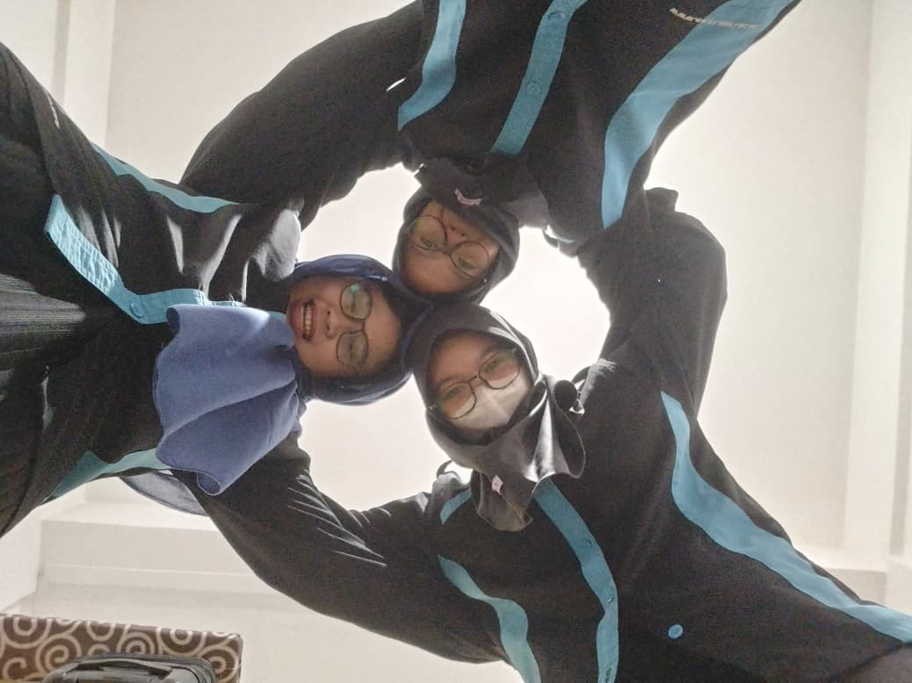

Highlight
Satu Momen, Berjuta Makna di Lingkungan Fakultas Teknik UNRI
Artikel ini membahas momen penting dalam sejarah Fakultas Teknik yang tidak hanya menginspirasi, tetapi juga memberikan dampak besar bagi pengembangan ilmu teknik di UNRI.
Baca Selengkapnya